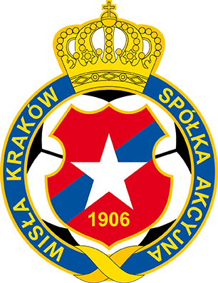
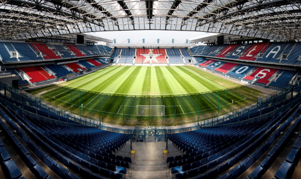

Wisła Kraków S. A.

Początki Białej Gwiazdy sięgają 1906 roku. Dokładna data nie jest znana, ale wspomnienia Romana Wilczyńskiego wskazują, iż pomysłodawca założenia Wisły złożył swoim uczniom tę propozycję na wiosnę tego roku.
W ostanim czasie Wisła Kraków rozgrywała spotkania sparingowe podczas zgrupowania w Turcji. Poniżej przedstawiamy Państwu ich wyniki.
| Data i godzina | Drużyna | Wynik | Rezultat |
|---|---|---|---|
| Wisła Kraków vs. Lask | 1:3 | Porażka | |
| Wisła Kraków vs. Hebar | 1:0 | Zwycięstwo | |
| Wisła Kraków vs. Szahtar U19 | 1:0 | Zwycięstwo | |
| Wisła Kraków vs. Wisła Płock | 5:1 | Zwycięstwo | |
| Wisła Kraków vs. Neftchi Fargona | 0:0 | Remis |
Już niedługo rusza wiosenna runda Fortuna 1 Liga w której Wisła Kraków rozegra następujące mecze:
Na mecze prosimy zabrać bilet i dowód tożsamości.

ul. Władysława Reymonta 20
30-059 Kraków